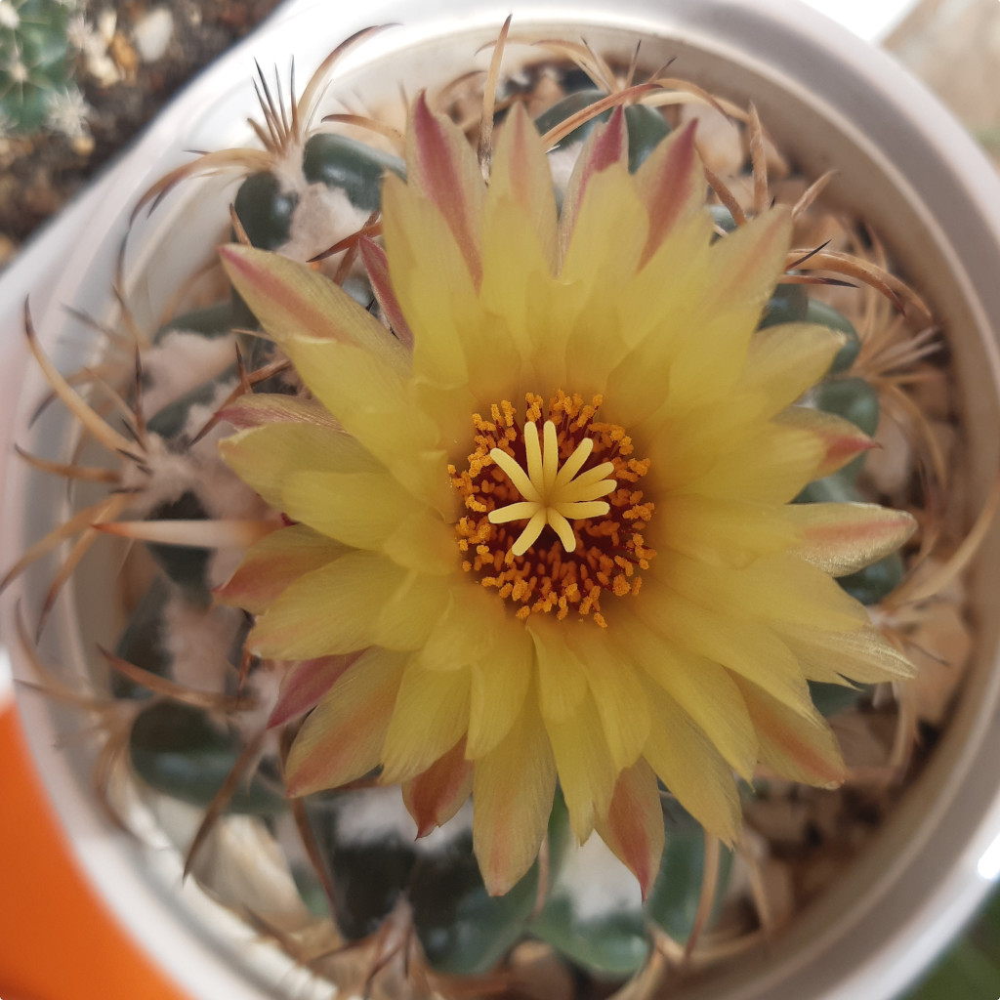
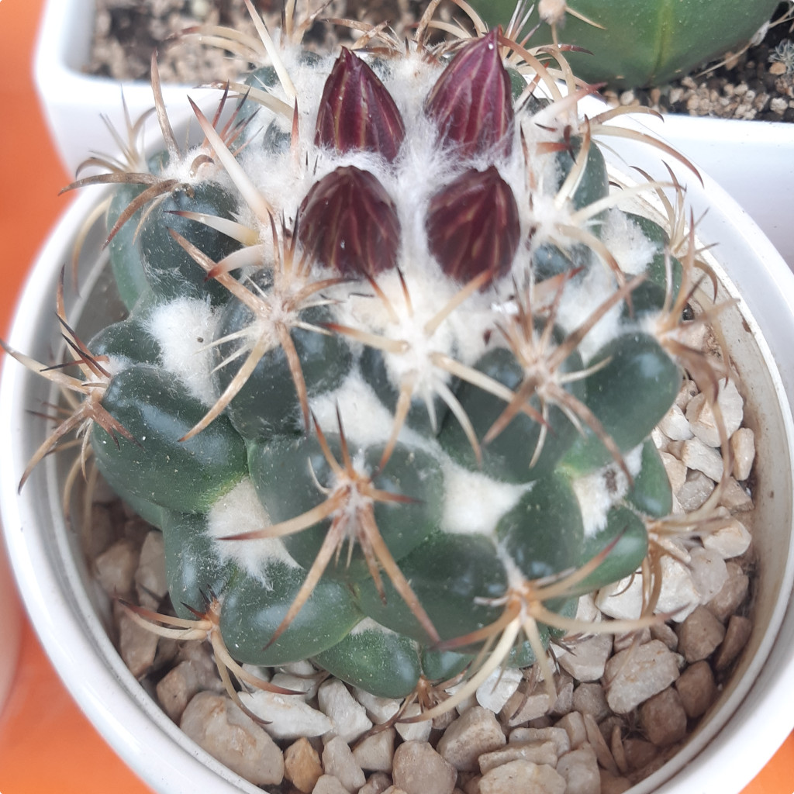
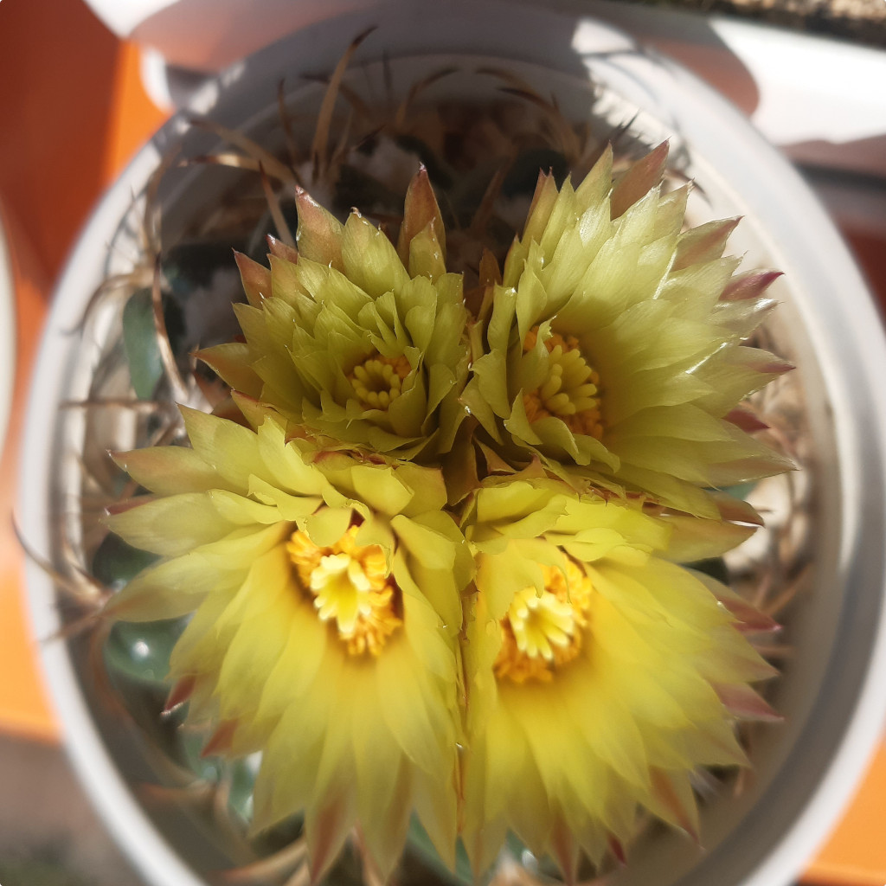

Nazwa zwyczajowa: „zęby słonia” (od łacińskiego elephantidens)
Rodzina: Cactaceae
🌍 Występowanie
Naturalnie występuje w Meksyku, szczególnie w stanie Michoacán. Rośnie na suchych, skalistych terenach, często częściowo zanurzony w podłożu.
🌱 Opis morfologiczny
- Kształt: spłaszczony kulisty, szerszy niż wyższy
- Średnica: do 14–20 cm
- Brodawki: bardzo duże, zaokrąglone u góry, u podstawy pięciokątne
- Kolce: 5–8 bocznych, przylegające, szarawe lub brązowe z ciemnymi końcami
- Korzeń: palowy, wymaga głębokiej doniczki
🌸 Kwiaty
- Duże, słodko pachnące, 6–7,5 cm długości
- Kolory: białawe, różowe, żółtawe
- Kwitnienie: późne lato do jesieni
🍒 Owoce i rozmnażanie
- Owoce: długie, ok. 4 cm, biało-zielone z czerwonawym odcieniem
- Rozmnażanie: głównie przez nasiona, rzadziej przez podział
🌞 Wymagania uprawowe
- Światło: pełne nasłonecznienie lub jasny cień
- Temperatura: do –3°C przez krótki czas, zimą najlepiej powyżej 10°C
- Podlewanie: umiarkowane latem, zimą całkowicie ograniczone
- Gleba: dobrze zdrenowana, obojętne pH
- Nawożenie: okazjonalnie nawozem mineralnym dla kaktusów
🏆 Ciekawostki
Jeden z bardziej rozpoznawalnych kaktusów kolekcjonerskich. Nazwa „elephantidens” odnosi się do kształtu brodawek przypominających zęby słonia. Wyróżnia się kilka podgatunków, m.in. subsp. bumamma i subsp. greenwoodii. Wrażliwy na przelanie i gnicie korzeni.
📷 Zdjęcia z prywatnej kolekcji
Prezentowane poniżej fotografie pochodzą z prywatnych zbiorów...


